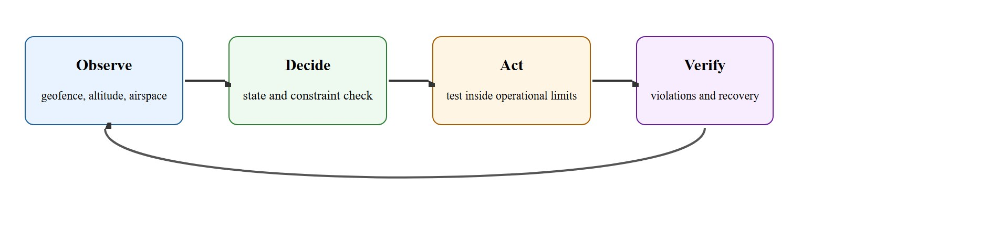
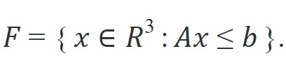
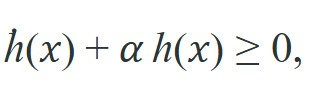

"A failsafe you have never triggered is a hypothesis, not a guarantee."
A Careful Control Loop
The geofence polytope and control barrier function introduced here build directly on the safety formalism developed in section 54.2 and section 54.3 (Part XI), where those tools are applied to ground robots and manipulators as well. The simulation-first validation workflow connects to section 9.2, which establishes why sim-to-real transfer requires explicit constraint matching rather than just policy fidelity. Readers who want to see these safety layers operating inside a full flight controller should continue to section 47.6, where quadrotor dynamics and the control stack that the geofence monitor wraps are derived in detail.
A drone delivering medicine to a rural hospital crosses into restricted airspace and the learned policy has no idea. The vehicle keeps flying, or worse, attempts a landing it was never authorized to perform. Incidents like this have already grounded commercial UAV programs worldwide, and autonomous aerial agents raise the stakes further: a policy that learned to fly in simulation carries no innate knowledge of geofences, Part 107 corridors, or fail-safe triggers. Right now, as regulators finalize frameworks for Beyond Visual Line of Sight (BVLOS, flying a drone farther than the operator can see it unaided) operations, the gap between what a policy can do and what it is legally and physically permitted to do is the defining engineering problem in aerial embodied AI. This section shows you how to close that gap with constraint layers, simulation-based evidence, and recovery behavior you can actually certify.
A policy that passes all simulation safety checks is not therefore regulation-compliant outdoors. It is not. Simulation encodes only the constraints the developer typed in. A geofence polytope in safe-control-gym reflects whatever bounding box sits in the config file, not the actual LAANC-authorized corridor at the real test site. RTH altitude limits in simulation do not sync automatically with the FAA Part 107 ceiling at the physical location. A clean simulation run proves the constraint logic executes correctly for the modeled boundaries. It does not prove those boundaries match the legal airspace at deployment time. Use simulation to validate constraint enforcement mechanics. Use a separate pre-flight step to confirm the constraint parameters match current regulatory and site-specific authorizations before any outdoor flight.
A policy that passes every simulation check but has never faced a real geofence, a real wind gust, or a real battery sag is a candidate, not a system. This section develops aerial safety, regulation, and simulation as a concrete embodied AI skill rather than a label. Figure 47.5A sketches the three layers this requires: a geofence constraint layer that overrides the learned policy near a no-fly zone, a regulatory compliance checker that validates the planned path against airspace rules, and a safe-landing trigger that activates at a critical battery threshold. The core contract is: observe geofence, altitude, failsafe, airspace constraints, and weather, test autonomy inside operational limits before hardware flight, and judge the result with violation count and emergency recovery success.
Aerial safety reuses the same interface the earlier frame, control, and model chapters define: state variables, timing budget, action limits, and evaluation panel. The constraint layers here plug into that interface rather than replacing it.
Aerial agents pay for every bad decision immediately. They are underactuated, energy-limited, wind-sensitive, and often safety-critical. For Safety, regulation, and simulation for aerial agents, the decisive question is whether the system can recover from the specific failure mode this section keeps returning to: a simulator pass that ignores the regulatory constraint defining the real mission.
Figure 47.5.1 makes the safety contract explicit by separating regulatory envelope, geofence monitor, detect-and-avoid logic, simulator evidence, operator override, and post-intervention state.

Before any autonomy policy runs, it must operate inside a hard spatial envelope that reflects both physical limits and legal requirements. In the United States, FAA Part 107 restricts recreational and commercial small Unmanned Aircraft Systems (UAS) to below 400 ft Above Ground Level (AGL), roughly 120 m. The rules also require visual line of sight and keep the aircraft out of controlled airspace unless the operator obtains a Low Altitude Authorization and Notification Capability (LAANC) authorization. DJI encodes similar boundaries into its GEO 2.0 system. The firmware refuses takeoff inside a No-Fly Zone and cuts maximum altitude automatically near airports, independent of whatever the flight app requests. The lesson: regulatory compliance is not a software feature you toggle on before release. It is a constraint you bake into every layer of the autonomy stack from the first prototype flight. Teams that catch a geofence violation in simulation typically fix it in minutes. The same violation on a real aircraft over a populated area can ground the entire program for months. This is why we call it the validate-in-sim-or-pay-in-hardware rule. Simulation typically surfaces the large majority of constraint violations before a single outdoor flight (practitioner reports from commercial UAV programs as of 2023-2024 commonly cite figures above 90%, though these figures are self-reported and vary with how aggressively a team simulates edge cases). To feel the scale difference concretely: a constraint bug that takes 3 simulation episodes to reproduce and 20 minutes to fix takes roughly 50 outdoor test flights, FAA coordination, site permits, and weeks of scheduling to encounter in the field.
Those regulatory limits only bite once they are expressed as something the flight software can check every tick, which is exactly what the constraint formalism below provides. Safety for an autonomous drone is enforced by hard constraints that sit underneath the autonomy stack and cannot be overridden by a confident policy. The most common is the geofence, a permitted region of space. A convex geofence is written as a polytope, an intersection of half-spaces:

Each row of $A\mathbf x \le \mathbf b$ is one boundary plane (north, south, floor, ceiling, and so on), so a candidate position is legal exactly when every row holds. Checking membership is a single matrix-vector compare, which is cheap enough to run every control tick.
A geofence only tells you whether you are inside; it does not stop you from flying out at speed. A control barrier function (CBF) makes safety dynamic. Define a scalar $h(\mathbf x)$ that is positive inside the safe set and zero on its boundary. Safety is forward-invariant if the control keeps

for some $\alpha > 0$. As $h \to 0$ (approaching the boundary) the inequality forces $\dot h \ge 0$, so the system is pushed back before it crosses. In practice this becomes a constraint in a small quadratic program (QP, an optimization that finds the command closest to the one requested while satisfying a set of linear and quadratic constraints) that minimally adjusts the autonomy command, letting the policy do what it wants whenever it is safe and intervening only at the margin.
Think of the CBF like water pressure in a garden hose pressed against a wall. Far from the wall the pressure is low and you can point the hose freely. As you push the nozzle closer, the water pressure builds and shoves the nozzle back with increasing force. The CBF's $\alpha\,h(\mathbf x)$ term works the same way: when the drone is deep inside the safe region $h$ is large and the constraint is nearly slack, but as $h$ shrinks toward zero near the fence boundary the inequality tightens and demands a corrective push back inward, scaling automatically with how close the aircraft actually is.
When using safe-control-gym's CBF wrapper, the decay parameter alpha in the inequality $\dot{h} + \alpha h \ge 0$ defaults to 10.0, which is tuned for slow ground robots and will cause the QP filter to override your aerial policy meters away from the actual fence boundary. For a quadrotor cruising at 3-5 m/s, start with alpha=1.0 and reduce further if the safety controller still fights the nominal policy in open space. You can set it per-environment via the task_config YAML key cbf_alpha without touching library source.
RTH triggers matter because aerial robots cannot pause indefinitely. A hovering quadrotor drains roughly 100 W continuously, so every fault must resolve within the remaining energy budget. The choice of fallback is a real-time physical commitment. A missed or delayed trigger turns a recoverable fault into a crash. The flight controller must therefore make the decision autonomously, without waiting for operator input.
The mechanism is a ranked priority table: each fault condition maps to a severity level and a fallback action. When multiple faults fire simultaneously, the table resolves to the highest-severity response. Low battery triggers a timed RTH; lost data link escalates to immediate RTH; GPS failure drops to hold-and-descend because flying home without position fix risks collision. The flight controller polls each condition every control tick and latches the winning action until the fault clears or the vehicle lands.
So far: three constraint layers now stack, a static geofence polytope for position, a dynamic CBF for velocity near the boundary, and a ranked RTH priority table for fault fallback, and the algorithm below is where all three get checked together before a flight is authorized.
Input: planned waypoint sequence $\mathbf{w}_{1:T} \subset \mathbb{R}^3$, geofence polytope $(A, \mathbf{b})$, CBF decay rate $\alpha > 0$, regulatory ceiling $z_{\max}$, battery level $\beta \in [0,1]$, RTH priority table $\Pi$
Output: authorization decision $d \in \{\texttt{GO}, \texttt{HOLD}, \texttt{ABORT}\}$, per-waypoint margin vector $\mathbf{m} \in \mathbb{R}^T$, triggered failsafe label or $\emptyset$
ArduPilot and PX4 both ship configurable geofence and RTH logic that pilots can observe in flight logs (DataFlash and ULog formats respectively). The open-source safe-control-gym library (Yuan et al., 2022) wraps these same CBF and CLF formulations in a Gym interface so teams can validate constraint satisfaction in simulation before touching hardware. For regulatory mapping, Wing and Amazon Prime Air both use the FAA's UAS Facility Maps and LAANC real-time airspace authorizations to gate autonomous missions: a mission that cannot obtain a LAANC clearance is not dispatched, regardless of what the planner computes. These pipelines show that the geofence polytope and the CBF constraint are not academic abstractions; they are the exact objects queried at takeoff in production systems.
Aerial safety combines regulation, geofencing, detect-and-avoid, flight termination, simulation evidence, and pilot override. A release log should identify which monitor acted, what state it observed, how long intervention took, and whether the final vehicle state was actually safe.
Encode a rectangular geofence as a polytope $A\mathbf x \le \mathbf b$ and test candidate waypoints against it. The box allows 0 to 50 m in $x$ and $y$ and 0 to 30 m in altitude. Beyond a simple inside/outside flag, we also report the signed margin, the distance to the nearest boundary, which is the quantity a CBF would drive to stay non-negative.
# Rectangular geofence membership test via a convex polytope A x <= b.
import numpy as np
# Box: 0 <= x <= 50, 0 <= y <= 50, 0 <= z <= 30 (meters).
A = np.array([[ 1, 0, 0], [-1, 0, 0],
[ 0, 1, 0], [ 0,-1, 0],
[ 0, 0, 1], [ 0, 0,-1]], dtype=float)
b = np.array([50, 0, 50, 0, 30, 0], dtype=float)
def check(x):
slack = b - A @ np.asarray(x, dtype=float) # >= 0 on every row means inside
return bool(np.all(slack >= 0)), float(slack.min()) # (inside?, margin to nearest wall)
for wp in [(25, 25, 15), (55, 25, 15), (25, 25, 32), (2, 2, 1)]:
ok, margin = check(wp)
flag = "OK" if ok else "VIOLATION"
print(f"waypoint {wp!s:>14} -> {flag:9s} margin = {margin:+.1f} m")slack = b - A @ x) run against four test waypoints; output shows the first waypoint comfortably inside (15 m of slack), the second breaching the east wall by 5 m, the third exceeding the ceiling by 2 m, and the fourth legal but only 1 m from a corner, the kind of low-margin state that should already be tightening the CBF constraint before the policy gets any closer.Expected output: a pass or fail per waypoint plus a signed margin. The margin is the evidence field that matters: a binary inside/outside test fires too late, while the continuous margin lets the safety layer slow the vehicle as it approaches a wall instead of slamming a hard stop at the boundary.
Trace the forward-invariance condition $\dot h + \alpha h \ge 0$ with concrete numbers. Use the east wall of the geofence at $x = 50$ m, so the barrier is $h(\mathbf x) = 50 - x$ (positive inside, zero on the wall). Pick $\alpha = 1.0$ (the aerial value from the tip above). At the current tick the drone is at $x = 47$ m, so $h = 50 - 47 = 3.0$. The nominal policy commands $\dot x_{\text{nom}} = +6.0$ m/s straight at the wall, giving $\dot h_{\text{nom}} = -\dot x = -6.0$. Plug in: $\dot h + \alpha h = -6.0 + (1.0)(3.0) = -3.0$, which is negative, so the condition is violated and the filter must intervene. The QP finds the closest safe command: it needs $\dot h \ge -\alpha h = -3.0$, i.e. $\dot x \le +3.0$ m/s. So the filter clips the velocity from 6.0 down to 3.0 m/s. One tick later (at 240 Hz, $\Delta t \approx 0.0042$ s) the drone has moved to $x \approx 47.0125$ m, $h \approx 2.9875$, and the new ceiling is $\dot x \le +2.99$ m/s. The allowed speed shrinks smoothly toward zero as $h \to 0$: at $x = 49$ the cap is $1.0$ m/s, at $x = 49.9$ it is $0.1$ m/s. The drone decelerates into the wall instead of bouncing off it, and never crosses.
Zipline operates fixed-wing delivery drones that fly autonomous BVLOS routes to rural clinics in Rwanda, Ghana, and the United States, dispatching only after the planned corridor clears an airspace-authorization check equivalent to the LAANC gate in this section's pre-flight algorithm. Each aircraft carries layered failsafes (a parachute-based flight-termination system and an automatic return path) that fire on lost link or battery faults exactly like the ranked RTH priority table here. The same geofence-plus-failsafe contract that prints a signed margin in Code Fragment 47.5.1 is what lets a regulator certify thousands of these flights per day over populated terrain.
For Safety, regulation, and simulation for aerial agents, the hand-built record exposes the flight fields; PX4, ROS 2, MAVLink, gym-pybullet-drones, Aerial Gym, and safe-control-gym should preserve the same schema.
The signed margin the worked example just computed is the raw signal the following validation loop consumes, so the recipe below turns that per-waypoint number into a repeatable simulation campaign before any hardware flight.
gym-pybullet-drones via the geofence_vertices parameter of CtrlAviary, or into safe-control-gym's task_config YAML as the constraints list with type: geofence.task_config YAML, episode seeds, the ULog or DataFlash file for each hardware flight, the margin vector $\mathbf{m}$ across all simulation episodes, and the two worst-margin simulation traces for post-hoc CBF tuning.Failsafes interact, and the dangerous case is a conflict. Low battery triggers return-to-home, but the home direction crosses the geofence wall, or RTH climbs to a transit altitude that breaches the ceiling. If the triggers are not prioritized and mutually consistent, two safety behaviors fight and the vehicle ends up in a worse state than either alone. The second classic failure is a geofence checked against a drifted state estimate: the math says inside, the aircraft is outside. Validate failsafes in simulation by actually firing every trigger, including combinations, and measure recovery success, not just whether the monitor flagged the event.
A robotics team using safety, regulation, and simulation for aerial agents should log not only final success, but intermediate observations, chosen actions, controller status, and recovery events. The logs reveal whether the method is solving the task or merely passing the easiest episodes.
A good embodied system makes safety, regulation, and simulation for aerial agents visible twice: once in the design sketch and once in the replay artifact. The second view keeps the first one honest.
Neural certificate synthesis for aerial safety. Hand-designing CBF candidates for complex aerial dynamics is brittle; recent work trains Lyapunov and barrier certificates end-to-end using counterexample-guided neural verification. The CEGIS-CBF line of work (e.g., Dawson et al., "Safe Control with Learned Certificates," IEEE T-RO 2023, extended to aerial vehicles at CMU's Safe Robotics Lab through 2024-2025) now targets quadrotors under wind disturbance and demonstrates certificates that generalize across weather conditions without manual retuning of the decay parameter.
Foundation models for regulatory compliance parsing. Airspace regulations are written in natural language (FAA Part 107, EASA SORA, BVLOS waivers) and change faster than codebases. Groups at MIT AeroAstro and Stanford SISL (2024-2025) are fine-tuning LLMs as regulation-to-constraint compilers: the model ingests a NOTAM or advisory circular and outputs a structured geofence polytope or RTH priority table entry that can be formally verified before use. The open problem is soundness guarantees: an LLM parsing a NOTAM incorrectly and emitting a permissive geofence could cause a real incident, so current work uses the LLM as a draft generator verified by a separate symbolic checker rather than as a direct controller.
Sim-to-real transfer under regulatory domain shift. A policy validated in simulation against one country's airspace rules must be re-certified when deployed in a new jurisdiction. Research at ETH Zurich's Autonomous Systems Lab (2024) formalizes this as a constraint transfer problem: given a simulator certified for FAA Part 107, how many real-world evaluation flights are needed before the same confidence bound holds under EASA rules? Current methods require far more hardware flights than practitioners can afford.
Open problem for PhD students: All current CBF methods for aerial agents assume the geofence boundary is known exactly at runtime. In practice, LAANC authorizations arrive as bounding boxes with positional uncertainty (GPS error at the authorization server, rounding in the airspace map). A tractable open problem is designing a robust CBF that treats the fence boundary itself as an uncertain set and computes a safety margin that holds with high probability under that uncertainty, without making the QP so conservative that the drone refuses to fly near any boundary. The challenge is keeping the QP solve time under 1 ms on embedded flight hardware.
Can you name the observation, state estimate, action, success metric, and most likely failure mode for safety, regulation, and simulation for aerial agents? If not, the system boundary is still too vague.
Aerial safety becomes robust once you separate three claims: the conceptual claim (why the skill should work), the systems claim (which interface it changes), and the evidence claim (which same-panel metric would convince a skeptical builder). Conflate them and a passing demo hides which one you have not actually earned.
For Safety, regulation, and simulation for aerial agents, keep flight physics, airspace constraint, battery state, timing, wind, and safety monitor inside the evidence artifact rather than in a post-run explanation.
| Tool or Library | Role in the Topic | Builder Advice |
|---|---|---|
| PX4, MAVLink, safe-control-gym, and scenario tests | Main practical route for Safety, regulation, and simulation for aerial agents | Use it after the baseline contract is explicit and keep the same artifact schema. |
| ROS 2 logs | Interface and timing evidence | Record observations, commands, controller status, and verifier events together. |
| Same-panel evaluation script | Construct-matched comparison | Compare methods only when metrics are co-computed on one scenario panel. |
For Safety, regulation, and simulation for aerial agents, the coordinate-frame link is operational: every artifact should name frame, timestamp, units, safety constraint, and the downstream evaluator that will consume it.
Create one scenario for Safety, regulation, and simulation for aerial agents, run the baseline and the PX4, MAVLink, safe-control-gym, and scenario tests route on the same inputs, then label each failure as perception, state, planning, control, timing, data coverage, or evaluation.
When Safety, regulation, and simulation for aerial agents fails, do not collapse the whole method into one score. Assign the failure to a subsystem, rerun one perturbation that isolates the suspected cause, and keep the trace as a reusable diagnostic case.
Dawson, C., Gao, S., & Fan, C. (2023). Safe control with learned certificates: A survey of neural Lyapunov, barrier, and contraction methods for robotics and control. IEEE Transactions on Robotics, 39(3), 1749-1767.
Background for the neural-certificate (CEGIS-CBF) research frontier on aerial safety.
Yuan, Z., Hall, A. W., Zhou, S., Brunke, L., Greeff, M., Panerati, J., & Schoellig, A. P. (2022). safe-control-gym: A unified benchmark suite for safe learning-based control and reinforcement learning in robotics. IEEE Robotics and Automation Letters, 7(4), 11142-11149.
Source for the CBF and CLF constraint wrappers and the cbf_alpha decay parameter used in the worked example and recipe.
Panerati, J., Zheng, H., Zhou, S., Xu, J., Prorok, A., & Schoellig, A. P. (2021). Learning to fly: A gym environment with PyBullet physics for reinforcement learning of multi-agent quadcopter control. IEEE/RSJ IROS, 7512-7519.
The gym-pybullet-drones simulator (240 Hz physics, geofence wiring) used for the 200-episode validation panel.
Federal Aviation Administration. (2021). 14 CFR Part 107: Small Unmanned Aircraft Systems; and FAA UAS Data Exchange (LAANC). Washington, DC: U.S. Department of Transportation.
The 400 ft AGL ceiling, BVLOS, and LAANC authorization rules that the pre-flight clearance algorithm queries; compare ArduPilot DataFlash and PX4 ULog geofence/RTH logs against these limits.
Safety, regulation, and simulation for aerial agents is useful when it makes the perception-action loop more reliable, not when it merely adds a more impressive model name.
Design a same-panel experiment for Safety, regulation, and simulation for aerial agents. Specify the scenario set, the baseline, the PX4, MAVLink, safe-control-gym, and scenario tests library route, the metric computation, and one perturbation that targets this failure: a simulator pass ignores the regulatory constraint that defines the real mission.
Geofence violation detector in gym-pybullet-drones (beginner, weekend): Build a Gymnasium wrapper around gym-pybullet-drones that encodes a rectangular geofence as a polytope, logs the signed margin each step, and terminates an episode with a violation flag when the drone exits the safe region. The key challenge is wiring the polytope membership check into the Gymnasium step() callback at the 240 Hz physics rate without introducing lag that breaks PID stability.
CBF safety filter for a simulated quadrotor (intermediate, 1-2 weeks): Wrap a pre-trained hovering policy from safe-control-gym with a quadratic-program CBF filter using the cbf_alpha YAML parameter, then run 200 episodes under Dryden wind disturbances and compare geofence violation rates with and without the filter. The key challenge is choosing $\alpha$ so the QP correction is tight enough to prevent boundary crossing yet loose enough that the filter does not dominate the nominal policy in open airspace.
RTH failsafe conflict detector in ROS 2 (intermediate, 1-2 weeks): Implement the pre-flight clearance algorithm from this section as a ROS 2 node that publishes a GO/HOLD/ABORT decision, then inject the conflicting failsafe scenario where the RTH climb altitude exceeds the regulatory ceiling and verify the node resolves it by holding in place rather than climbing. The key challenge is designing the priority table so every combination of simultaneous faults (low battery, GPS denial, ceiling conflict) maps to a unique, unambiguous recovery action without requiring operator input.